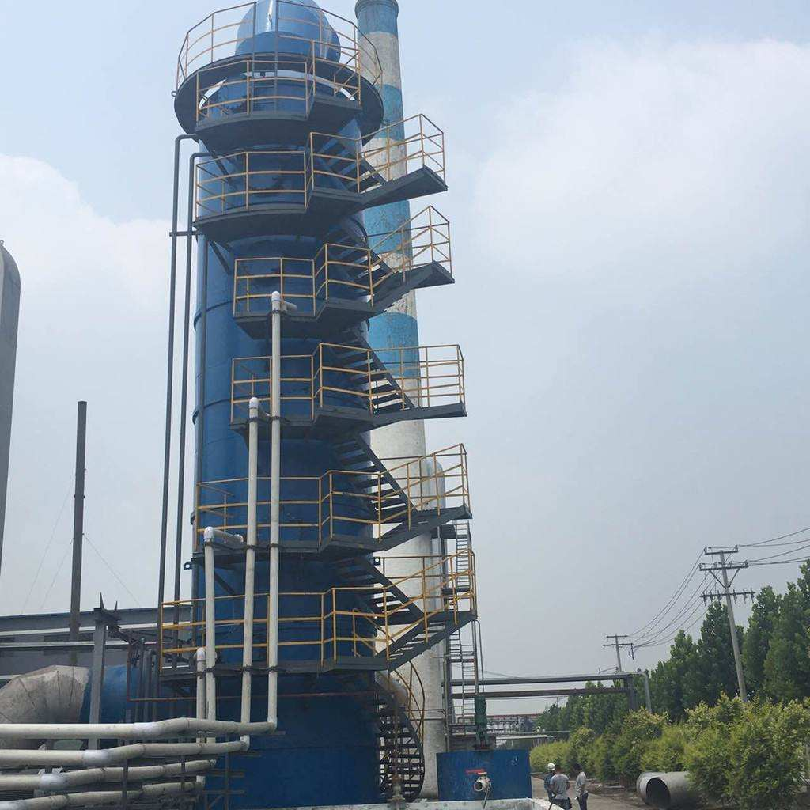
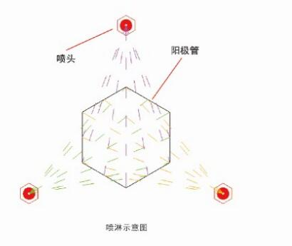

江西华邦复合材料有限公司专业从事电除雾器、湿式电除尘器及阳极管等除尘设备的研发生产
 13870005775
1387000577513870005775
邮箱：jiangxihb@163.com
电除雾器在冶金、硫酸行业已有30年的成功运行经验，主要用来收集酸雾、脱除细颗粒物，原来我国烟气净化和尾气处理多采用铅电除雾器和塑料电除雾器（PVC），在实际生产中有许多不足之处。近年来由于材料工业的发展、技术的进步，碳玻璃钢等新材料的不断出现，国际及国内开始选用更先进的导电玻璃钢材料作为电除雾的主体材料，并且获得成功和收到满意的效果。目前电除雾器行业标准为HJ/T 323-2006、管式电除雾器的标准为JB/T 8535-1997。
导电玻璃钢电除雾器通常用于用于环保行业的烟气净化即冶金、化工、石油等行业的气体净化除雾和除尘。
导电玻璃钢电除雾器具有如下特点：
1.导电性能好，除雾和除尘效率高。
2.耐腐蚀性强，阻燃性好，使用寿命长，安全可靠。
3.结构紧凑合理，强度高，设备重量轻。

江西华邦复合材料有限公司运行中的导电玻璃钢电除雾器
走出湿法脱硫塔作为除尘器使用的设计误区
现在设计中流行采用4 电场或5 电场电除尘器, 使除尘器出口排放达到100 mg/m3, 再加上湿法脱硫除尘50%, 达到最后的排放50 mg/m3 以下的方法 , 实际工程应用中受烟尘物化特性的影响, 5 电场电除尘器也很难保证除尘效率达到100 mg/m3 以下, 并且脱硫塔作除尘器用, 脱硫效率下降和部件磨损影响正常运行及石膏品质, 甚至失去0.015 元/( kW·h) 的脱硫电价, 这样做得不偿失, 值得思考。

粉尘浓度对脱硫塔安全运行的影响
脱硫塔本身有除尘作用, 设计人员往往将脱硫塔一般考虑有50% 除尘效率, 有些甚至设计为80%除尘效率。以一台300MW机组为例, 双室3 电场电除尘器烟气出口质量浓度256 mg/m3, 排放量为506 kg/h, 按脱硫塔除尘效率50%设计, 就有253 kg/h粉尘掺入石灰石浆液系统循环, 影响脱硫效率, 也加剧了循环泵和喷淋系统的磨损, 有的电厂运行不到半年, 循环泵及喷淋系统部件都因磨损更换。大量粉煤灰也影响石膏结晶和品质不利于销售。更重要的是PM10 以下的粉尘不能去除, 只有采用5 电场或6 电场的电除尘器才有可能得到改善, 但在占用场地和技术经济比较方面电除尘就失去优势了。
了解威美湿式静电除尘器
随文附上<<湿法脱硫塔作除尘器使用的危害性>>
江得厚 董雪峰 王贺岑 王勇
【摘要】：介绍全国电厂脱硫设备近几年发展带来的若干问题。其中最主要的问题是设计时将脱硫塔作为除尘器使用,除尘效率为50%～80%不等,造成脱硫效率下降、除雾器、气-气热交换器(GGH)、循环浆液泵等旋转机械及石膏脱水等设备磨蚀、结垢或发生堵塞等事故,需要花费大量资金改造,造成经济损失。列举了脱硫塔作除尘器使用的危害性事例,希望引起有关方面重视。
【作者单位】： 河南电力试验研究院;华电新乡发电有限公司;
【关键词】： 脱硫塔 除尘器 故障 除雾器 除尘效率 烟尘质量浓度 效率下降 石灰石 脱硫系统 新机组
【分类号】：X701.3
【正文快照】：
1脱硫机组的发展情况由于对火电机组烟气加大治理力度,近5a来火电脱硫机组大量增加,到2005年底脱硫机组容量达5300万kW,比2000年增长了10倍。2006年新增加7000万kW以上的脱硫装机容量,超过10a投运脱硫机组装机容量4600万kW的总和,达到10400万kW,占火电总装机容量的比例由2005

江西华邦复合材料有限公司，是专业从事工业大气污染处理等领域的技术研究、产品生产和系统应用工程服务为一体的高新技术环保公司。主要从事电力、化工、冶金、矿山、建材、铸造、烟草、锅炉、沥青水泥机械、粮食、机械加工、水泥等行业烟气除尘、除灰、除雾等环保工程技术开发、咨询；环保新设备、新工艺、新技术开发、推广及相关技术服务；环保设备的制作、安装、调试、技术培训一条龙服务。
湿式静电除尘设备作为一种先进的烟气治理技术，湿式电除尘技术在欧洲、美国、日本等国家已得到广泛应用且效果良好。国内企业自主开发的湿式电除尘技术，已在燃煤电厂取得成功应用。上海长兴岛第二发电厂燃煤锅炉湿法脱硫后改造工程配套电除雾器，出口粉尘排放浓度仅为6.1mg/m3，引起业界高度关注。我国也有环保企业引进国外的湿式电除尘技术，并有多家电厂签订湿式电除尘器合同，最大配套机组为1000MW。相信随着湿式电除尘技术在我国的推广应用，其必将成为满足超低排放、治理PM2.5的有力武器。
江西华邦复合材料有限公司是江西省知名的生产湿式除尘设备的制造企业，公司主营湿式电除尘器整套设备及电除雾设备配件，产品有阳极管、电除雾器、湿式电除尘器、电捕焦油器及各种材质阴极线等湿电配件。目前已有多台湿电产品运行在建材、化工、金属冶炼、锅炉、煤电行业（后附超低排放效果图）, 公司技术力量雄厚，不但拥有一支专业、高效的技术团队，而且始终坚持技术开发和品牌建设工作互相促进、共同发展的原则！以优质的产品打造提升公司的品牌形象，以良好的品牌效应促进产品技术的开发，目前，我公司已拥有多项新技术成果，公司设备遍布全国各省、市、自治区，在电力、建材、冶金、轻工、化工、硫酸等众多行业中得到广泛应用，在全国同类别产品中销量领先，并享有良好的市场信誉！

江西华邦复合材料有限公司厂区

威美湿式静电除尘器阳极管束、壳体及配件生产现场

江西华邦湿式电除尘器现场运行效果
阳极管按材料分为：导电玻璃钢阳极管，不锈钢（304、316L、2205）阳极管；
玻璃钢阳极管结构形式为内切圆360mm正6边形，壁厚3mm，长度为：6000mm；
玻璃钢阳极管介绍:http://www.cnwesp.com/product/product89.html
不锈钢阳极管结构形式为内切圆360mm正6边形，壁厚1.5mm，长度为：6000mm；
不锈钢阳极管:http://www.cnwesp.com/product/product88.html
把多根阳极管组合，形蜂窝状沉淀电极。组装并加强后，作为一个整体，与上下花板连接，阳极管制作严格按国家相关以及行业标准要求执行，合格沉淀管内表面应平整顺滑；
玻璃钢阳极管内表面含有碳纤维及阻燃剂的耐磨阻燃导电层，壁厚均匀并且管端面和轴线成直角、无毛刺，外观无任何形式的缺陷，主要导电方式是通过碳纤维粘和水膜导电；。
玻璃钢阳极管采用新技术导电玻璃钢，为CFRP导电碳纤维强化复合材料，由玻璃纤维、石墨粉、树脂材料以及各种添加剂通过模压、缠绕、手糊成型、以及防紫外线 防老化等工艺制成。内表面平整光洁易冲洗，阻燃以及抗腐蚀性强，可以抗各种酸（硫酸、盐酸、氢氟酸等）和强碱的腐蚀。其导电性、机械强度、耐温性能以及抗老化性完全满足阳极材料的使用要求由阳极管组成的管束构成湿式静电除尘器的阳极系统。

同为可再生能源，在风电、光伏补贴逐步退坡的形势下，装机规模已超“十三五”规划目标的生物质电价政策是否会有调整，受到业界高度关注。
近日，由国家可再生能源中心、国家发展改革委能源研究所、中国产业发展促进会生物质能产业分会联合编制的《生物质电价政策研究报告》（以下简称《报告》）在北京发布。
《报告》认为
退坡机制主要是针对风电和光伏发电产业出台的政策。在现有电价政策下，大部分生物质发电项目维持微盈利水平或在盈亏平衡线上下浮动，而且从近期看，生物质发电成本不具备大幅下降空间。未来生物质发电将逐步转型升级为热电联产。
装机规模超规划目标
生物质发电是生物质能利用的最普遍方式之一，是继风电、光伏发电之后的第三大非水可再生能源发电产业。今年以来，其装机规模延续去年稳步增长态势，超过“十三五”规划目标。
据国家能源局发布的数据，截至2018年9月底，我国可再生能源发电装机达到7.06亿千瓦，同比增长12%。其中，生物质发电装机1691万千瓦，同比增长18.8%，高出可再生能源发电装机同期增速6.8个百分点，与其去年全年增速基本持平。累计生物质发电排名前四位的省份是山东、浙江、安徽和江苏，分别为249万、175万、159万和158万千瓦。
今年前三季度
生物质发电新增装机215万千瓦，占可再生能源新增电力装机的3.8%，较去年底时约2.2%的占比进一步提升；发电量661亿千瓦时，同比增长16.4%。
到2020年
而据《生物质能发展“十三五”规划》，到2020年，生物质发电总装机容量达到1500万千瓦，年发电量900亿千瓦时，其中农林生物质直燃发电700万千瓦，城镇生活垃圾焚烧发电750万千瓦，沼气发电50万千瓦。显然，生物质发电速度已超出“十三五”规划预期。实际上，三类发电形式并网装机容量在去年底时已逼近规划目标，分别为700.8万、725.1万和49.9万千瓦。
与此同时
生物质发电补贴也形成资金缺口。《报告》指出，截至2017年底，未列入可再生能源电价附加资金目录的补助资金和未发放补助资金共计约143.64亿元。未纳入可再生能源电价附加资金支持目录的项目的总装机规模已达122.8万千瓦，约占生物质发电装机的8%。
短期内补贴退坡依据不充分
增速超规划预期、补贴拖欠，这两个导致光伏、风电电价政策收紧的重要因素，将对生物质电价产生何种影响，成为行业之忧。
目前，农林生物质发电上网电价为0.75元/千瓦时，垃圾焚烧发电电价在入厂垃圾处理量折算的上网电量内为0.65元/千瓦时，其余上网电量执行当地同类燃煤发电机组上网电价。《报告》从生物质发电的产业定性、发电成本等方面进行分析，指出了保持连续稳定的生物质电价政策的必要性。
《报告》认为
生物质发电属于环保和民生效应优先的低碳可再生能源清洁电力。其在农村和城市中承担的废弃物处理的重任是风电和光伏发电无法取代的；其燃料的购买、收集、装运和存储等费用支出约280～320元／吨，其中很多工作需要农民参与，可以显著增加农民就业和收入。
从发电成本来看，在现有电价政策下，大部分生物质发电项目维持微盈利水平或在盈亏平衡线上下浮动，而风电和光伏发电成本在近年来快速下降，平价上网近在眼前。尽管生物质发电也在积极探索降低成本的可行性路径，但生物质燃料成本和未来随排放标准的提高造成的环保成本的增长，足以抵消技术进步带来的成本下降。无疑，生物质发电补贴退坡会影响产业发展动力。
记者还了解到，今年初，国家能源局下发《关于开展“十三五”生物质发电规划修订工作的通知》，启动“十三五”生物质发电规划修订工作，或将调增规划目标，增加享受国家补贴的项目规模。因为2017年7月国家能源局印发的《生物质发电“十三五”规划布局方案》，一次性下达了2334万千瓦的规模；更早公布的《可再生能源中长期发展规划》还曾设定过3000万千瓦的目标。
未来要向热电联产转型升级
未来生物质发电将逐步转型升级为生物质热电联产，以提高能源利用效率和综合效益。《报告》指出，农林生物质发电大多以纯发电为主，能源转换效率不足30％，产品单一、项目经济效益较差，限制了我国生物质发电规模的进一步扩大。从国外的生物质利用经验看，生物质热电联产方式的能源转化效率将达到60%-80%，比单纯发电的效率提高一倍以上。
国家层面正在鼓励、支持和引导这一转型。
记者梳理发现，近一年多来发布的《北方地区冬季清洁取暖规划(2017-2021)》《关于可再生能源发展“十三五”规划实施的指导意见》《关于促进生物质能供热发展指导意见的通知》《国家能源局关于开展“百个城镇”生物质热电联产县域清洁供热示范项目建设的通知》等政策文件均鼓励发展生物质热电联产。
上述文件明确，从严控制只发电不供热项目。到2020年，生物质热电联产装机容量超过1200万千瓦，到2035年将超过2500万千瓦。“百个城镇”生物质热电联产县域清洁供热示范项目力争2018年底前建成（或完成技改）。
然而，转型升级并非易事。《报告》指出，生物质发电向热电联产方向改造升级的过程中仍面临热源和热需求不匹配、居民供暖热价倒挂等问题。特别是，目前补贴机制主要集中在电力生产端，在供热端缺乏合理适宜的补贴措施。
考虑到各地经济条件和热需求状况差异，《报告》建议，因地制宜的研究制定地方性热价补贴政策，针对居民供暖和工业供热等不同热力用户采取相应补贴措施。出台地方生物质供热的相关财税补贴优惠政策，有效缓解当前可再生能源电价附加资金紧张状况。

我国大气污染源主要集中于工业污染和汽车尾气，根据环境部发布的《2017年中国环境状况公报》，我国338个城市中大气的主要污染物集中在PM2.5、PM10、臭氧和氮氧化物。其中较为严重的是PM2.5和PM10。在统计的338个城市里，这两项指标差的城市比例高达50%以上。改善空气质量要从上述4种物质的排放源下手。
PM2.5和PM10其实就是直径不同的粉尘，另外，臭氧是氮氧化物与挥发性有机物（VOCs）在空气中经过复杂的化学反应形成的二次污染物。因此为了控制我国大气污染，需要追踪粉尘、氮氧化物和VOCs的排放源情况。根据《我国大气污染来源分析》一文中的统计，我国粉尘和氮氧化物的主要排放源都是工业生产，分别占到了83%和71%。而机动车排放占大气氮氧化物排放的27%，是第二污染源。


如果将工业领域进一步细分的话，电力（特别是火电）、钢铁和建材行业是排放烟粉尘和氮氧化物的主要行业。这三个行业占到所有工业这两项污染物排放的70%以上。
为了实现减排的目标，2010年我国曾经执行了以拉闸限电为强制手段的限产行动，依靠限产减少工业污染很难持续。钢铁、水泥价格的上涨使限产之路很难持续，一旦这些行业供求关系好转之后继续限产，虽然对空气环境的控制仍有好处，但会导致供求关系的反向失衡，造成产品价格的大幅度上涨，从而增加下游行业的成本，对国民经济造成不必要的伤害。所以工业限排力度将继续加强，限产之路越走越窄的情况下，为了减少工业生产对大气的污染，进一步提高在产产能的排放标准就成为具备可操作性的政策选择。我国计划在东部地区、中部地区、西部地区分别于2017年、2018年和2020年前基本完成燃煤电厂的超低排放改造。2017年1月5日，国家能源局发布《能源“十三五”规划》及《可再生能源“十三五”规划》，其中提出，为优化现有能源系统，继续深入推进煤电超低排放和节能改造，“十三五”期间要完成煤电机组超低排放改造4.2亿千瓦，节能改造3.4亿千瓦。
介于此前的“超低排放”指标的达成程度，以及2017年后对于超低排放标准覆盖率的进一步提升，我们预计未来全部火电工业都将采取“超低排放”标准。据中国产业信息网数据显示，2007年至2017年十年间，中国火电装机6000千瓦及以上火电设备容量增速呈逐年放缓趋势，10年内累计增速同步放缓约47%。照此趋势判断，至2030年我国火电装机量增速约为2.27%，火电装机量约可达到16.22亿千瓦；减去4.5亿千瓦前期已完成指标，仍有新增改造空间约6.43亿千瓦，新建空间5.29亿千瓦，新增市场空间1178~2183亿元。
环保之路，非电工业限排将成为下一个主战场，与排放标准极为严格的电力行业相比，非电行业目前各自的排放标准相对宽松，钢铁、建材和炼焦行业等各项排放指标均存在很大的改善空间。
钢铁行业的SO2年排放量仅次于燃煤电力，居第二位，占全国SO2总排放量的10%；而全国钢铁行业现行排放标准中三大主要空气污染物SO2、NOx、烟尘排放标准依次约为200、300和50mg/m3，远高于煤电超低排放的标准，迫于严峻的环保形势，各地方政府在全国全面提高排放标准之前就已经开始了对非电行业排放限值的进一步提升，2017年6月，环保部发布《钢铁烧结、球团工业大气污染排放标准》等20项国家污染物排放标准修改单，重点区域非电行业标准开始收严，预计针对非电领域的工业环保要求将进一步提高。
汽车减排以提高排放标准和电动车替代升级为主要方向，改善汽车尾气排放的长效机制是在提高汽车尾气排放标准的同时，增加新能源汽车在汽车使用量中的占比，逐渐减少存量汽车污染物的排放量。
我国生活污水排放占比高达70%以上，工业污水的排放量每年以2%以上的速度下降，农村污水处理设施还存在较大缺口，农村污水处理率为22%，远远落后于城镇的污水处理率，“水十条”和《全国农村环境综合整治“十三五”规划》中提出，2020年全国农村污水处理率计划达到70%，新增完成环境综合整治的建制村13万个，累计达到全国建制村总数的三分之一以上。
根据国际经验，工业增长达到一定阶段以后，工业污水数量将开始出现下滑，而且会呈现逐年下降的趋势，从目前我国水环境的污染程度来看，提高后的标准实施效果仍然不能满足我国水体环境改善的要求。因此我们预计未来工业废水的排放标准仍然会进一步提高。
流域治理从全流域角度考虑排放限值，我国首次运用流域治理的思路对长江整体生态环境保护进行的顶层设计，其对长江流域水环境的重要影响就是从全流域角度进行排污口的整改。长江水资源总量占全国的35%，流域覆盖15个省、2个自治区、2个直辖市，哺育人口占比全国高达40%；截至2017年7月，长江经济带GDP占比全国已经超过了40%。因此长江流域的环境治理对我国整体的生态环境有着举足轻重的影响。
我国土壤环保，特别是已污染土壤的修复工作，目前还处在起步的阶段，对土壤污染的程度还没有全面准确的认识，没有健全的法制法规体系，壤修复技术还处于起步阶段，处于技术研发和产业化初期。土壤修复只能作为我国土壤环保中长期目标。目前应以控制污染的进一步扩大，减小污染源的进一步排放作为目前较为现实的工作目标。
改善对涉及民生领域的管控措施，制定压非保民工作方案，优先确保民生需求、扶贫攻坚、重点项目等工程实施；对战略性新兴产业、现代服务业、环保“领跑者”企业和环境友好的成长型中小微企业，加大扶持力度，引导其规范发展，保障正常生产；对不符合产业政策、手续不全、治理无望、不能稳定达标排放的企业，坚决依法关停取缔；对资源环境效率低、排放总量大、污染严重的企业，根据排放量及排放强度分级分类管控，建立秋冬季错峰生产企业清单。针对重污染天气，要逐企业制定重污染天气应急预案。重污染天气期间，对能够稳定达到超低排放限值的工序和设备，达到“绿色”建材行业大气污染物排放标准目标的企业，按照“多排多限、少排少限、不排不限”的原则，采取适度应急减排措施。

根据中国环境监测总站最新预测预报结果，11月13日至15日，京津冀及周边地区和汾渭平原受不利气象条件影响，将发生一次大气重污染过程。国家大气污染防治攻关联合中心及时组织专家会商，邀请中国环境科学研究院大气环境首席科学家柴发合研究员对本次污染过程的来源成因进行解读。
一、总体情况
11月12日起，京津冀及周边地区和汾渭平原气象条件逐渐转差，污染物缓慢累积。12日0时，安阳市PM2.5浓度首先达到小时重度污染，随后郑州、新乡、邢台等多个城市的PM2.5浓度达到小时重度污染，并逐渐向北发展。截止12日22时，区域内PM2.5小时浓度最高值为206微克/立方米，出现在开封（12日19时）。北京市PM2.5小时浓度最高值达150微克/立方米（12日21时）。

图1 “2+26”城市11月12日典型时段PM2.5浓度分布图
根据中国环境监测总站最新预测预报结果，11月13日至15日，京津冀及周边地区和汾渭平原受不利气象条件影响，北京、天津、江西省中南部、山西省东部和南部、山东省西部、河南省北部以及关中地区部分城市空气质量将连续2至3天达到重度污染，个别城市可能出现严重污染。北京市13日空气质量以中至重度污染为主，14日可能达重度污染，15日上午可能维持重度污染，中午前后预计有所改善。
二、成因分析
1、气象条件
12日起，京津冀及周边地区近地面转为以弱南风为主，区域夜间风速降低、湿度增大，大气扩散条件转差，多数城市出现静稳、高湿和逆温现象，污染物逐步积累。各地气象部门已分别发布了大雾预警。12日夜间，北京市受大气中层逆温以及近地面高湿的叠加影响，有利于二次颗粒物的快速转化和吸湿增长，推高PM2.5浓度。

图2 “2+26”城市11日20时区域风速和相对湿度分布
2、污染排放
目前，工业和交通领域大气污染物排放量仍居高位，各类施工量大面广，扬尘控制仍不到位，同时，北方地区已进入初冬时节，天气渐冷，城市建成区陆续启动冬季采暖，农村地区也开始自采暖，区域污染物排放量有所增大，大气污染物排放量进入年度最高季节。
三、预警应急
针对13日至15日污染过程，生态环境部已向北京、天津、江西、山西、山东、河南、陕西省（市）人民政府发函，建议各地根据当地空气质量预测预报情况，及时启动相应级别重污染天气预警，提前采取减排措施，有效减轻重污染天气影响。截止13日8时，上述省市中共25个城市发布预警，江西省8个城市、河南省6个城市发布橙色预警，启动Ⅱ级应急响应措施；其他11个城市发布黄色预警，启动Ⅲ级应急响应措施，其中北京市于13日8时、天津市于13日12时启动应急响应措施。
经初步测算，针对此次重污染过程采取的应急减排措施，对一次颗粒物、SO2、NOx、VOCs等污染物的全社会减排比例在10%-15%左右。
四、预测预报
根据中国环境监测总站会商京津冀及周边地区省级监测中心的最新空气质量预测预报结果，11月15日中午前后，受冷空气影响，区域污染过程缓慢减轻，污染带整体向南缓慢移动，京津冀中部地区有所改善，京津冀南部、山东西部和河南北部地区受污染传输影响可能维持重度污染，预计16日污染过程结束。
11月16至18日，受冷空气持续影响，扩散条件有利，区域大部分地区以优良为主，个别地区可能出现轻度污染。
预计北京市11月15日中午前后空气质量将有所改善，全天以良至轻度污染为主，16至18日以优良为主。
湿电(湿式电除雾器喷淋系统（水泵、自动阀门、喷淋管道及喷头）检查调试
湿电配有一种喷淋方式，即间断喷淋。喷淋对提高湿电的效率，电场的清洁和长期稳定、安全运行作用非常明显和有效，特别是对湿电的安全运行和投运初期至关重要，这点应引起所有用户的重视和严格按要求进行。间断喷淋可选用不带杂质的弱酸性循环水或清水。

湿电(湿式电除雾器）喷淋示意图
1、喷淋循环水箱杂物清理，注水试漏。
2、打开循环水泵入口阀门，运转循环泵冲洗喷淋管道。
3、管道冲洗完毕后，停止循环水泵，安装喷淋喷咀。
4、运转循环水泵，打开泵出口阀，将湿电冲洗水管压力控制在0.3~0.4Mpa之间。
5、手动调节湿电间断喷淋装置，确认压力正常，电场内外管道无泄漏，喷淋均匀，电场内无明显喷淋洗涤死角。
6、将间断喷淋在控制室DCS上进行自动联锁控制 ，确认动作正确、可靠、到位、灵活。
7、停止循环水泵，关闭泵入口阀，喷淋系统调试完毕。
阳极管组成湿式静电除尘器的阳极系统，江西华邦复合材料有限公司生产的玻璃钢阳极管的优势是耐腐蚀性强，导电性能优良、除尘除雾效率高。重量轻、强度高，结构紧凑，蜂窝型结构使每个极管的内外表面都成为沉淀表面。阻燃性好，材料的氧指数可达32以上。使用寿命长达20年。
玻璃钢阳极管层次结构及制作：
导电玻璃钢阳极管（沉淀电极）所用玻璃钢的层状结构从内到外依次为：１层碳纤维垫、２层短切纤维条状垫、3层0.4mm厚的玻纤布以及ｌ层 玻璃表面垫，树脂采用乙烯基树脂，其中含有高含碳量（>98%）石墨、阻燃剂等，这种材质的导电玻璃钢具有强度高、刚性好、导电性能 好、阻燃等优点。

江西华邦湿式静电除尘器玻璃钢阳极管
玻璃钢阳极管蜂窝管特点：
玻璃钢阳极管重量轻、强度高，外形尺寸确定，不会发生像铅沉淀极那样因使用时间长而导致极管变形的现象，延长了设备的使用寿命。
结构紧凑，蜂窝型结构使每个极管的内外表面都成为沉淀表面，之间不存在死区。因此，对处理同样规模的烟气，它的体积小，占地面积小。
耐腐蚀性强，能耐各种稀酸、碱、盐介质的腐蚀。
阻燃性好，经国家专业测试机构检测，材料的氧指数可达到了28%以下。因此，即使电场内拉弧也不会引燃沉淀。
玻璃钢阳极管适用范围:
导电玻璃钢阳极管广泛应用于导电玻璃钢电除雾器，湿式静电除雾器，湿式静电除尘器WESP等除尘除雾设备。

湿式静电除尘器阳极系统－五组玻璃钢阳极管束
目前，我国通用的VOCs废气治理方法虽然在一定上减轻了空气污染，但是仍然不能有效的治理和彻底根除，需要我们不断努力，研发出更加科学的治理VOCs废气技术，才能解决VOCs废气排放的危害，还人们生活一个健康的生活环境。
随着我国工业经济的快速发展，为社会带来了巨大的经济利益的同时，也排出了大量有害废气，不但污染了环境，也给人们的生活和身体带来了严重的伤害。因此，VOCs废气治理已经显得迫在眉睫。目前，我国的VOCs废气治理现状还存在着一些不足，需要不断发展和进步，利用更先进和科学的治理方法进行更加彻底的VOCs废气治理。
VOCs废气是一种挥发性有机物，它的形成是多方面的。例如，人们出行使用汽车排放出的尾气，还有各种家装涂料以及重金属冶炼污染等都会形成VOCs废气，给空气造成了污染。随着环境问题的日益严重，人们对于VOCs废气治理也认识越来越深刻。由于VOCs废气覆盖范围较广，涉及方面较多并且难以避免，因此人们研究出来许多经过实践检验可行的治理方法。
目前，我国通用的VOCs废气治理方法虽然在一定上减轻了空气污染，但是仍然不能有效的治理和彻底根除，需要我们不断努力，研发出更加科学的治理VOCs废气技术，才能解决VOCs废气排放的危害，还人们生活一个健康的生活环境。
1目前我国VOCs废气治理的现状及问题
(1)废物回收利用的冷却凝固治理技术
这是目前一种常见的废气治理技术，它主要是利用气体在温度极低的情况下就会变成液体，这样就可以使得废气中的有害物质与VOCs有机物两者进行有效的分离，废气中的VOC有机物被回收利用，而将有害物质处理掉。这种处理方式虽然简单易操作，但是面对冶炼行业或者其他炮竹等高危物体排放出的废气，所含的VOCs并不是很高，一般的冷却技术难以将之分离出。必须投入更大的成本和其他先进的冷凝物质帮助其回收。因此，这种处理技术具有一定的局限性，不适合高难度、大面积的VOCs废气处理。
(2)燃烧毁灭式治理
燃烧毁灭式顾名思义就是运用燃烧的方式进行VOCs废气的分解处理。根据操作方法不同，也可以分为三种：一种就是直接将VOC废气作为一种可燃物进行焚烧处理，它的优点是摧毁效率比较高，缺点是对于那些含量少的废气难以除净；第二种是添加助燃物的燃烧法，在这种燃烧法中VOC废气是一种辅助燃料，可以加快VOCs废气的燃烧处理速度，但是相对来说成本加大；第三种则是一种催化燃烧法，由于催化剂的作用，使得这种燃烧处理技术对温度的依赖性不高，因此可以减少成本和人工费用，得到了人们的青睐，应用较为广泛。
(3)水溶解式治理
这种VOCs废气处理技术利用的原理是废气中的有害物质会遇水进行溶解，进而被微生物吸收并在新陈代谢和自我生长的过程中逐步转化为无害物质，对空气和环境不会构成危险。这种方法便于操作，但是大面积的废气治理则会造成水资源的浪费，因此只适合局部的小面积的VOCs废气治理，不做长远的使用和推广。
2 未来废气治理的发展方向及新技术应用
(1)变废为宝的生物分子转换
对环境污染治理的重视和VOC废气处理过程中的经验总结，近年来我国在废气治理技术上取得了新的突破和进展，即运用生物分子转化法去除VOCs废气。这种技术可以直接将废气中的有害物质运用生物分子进行转换，变废为宝，转变成可利用的无害物质。不仅成本低廉，上手快，操作简单，而且适用范围和面积较大，是未来应该重点扶植和推广的技术。
(2)有害物质提取与隔离法治理
这种技术旨在将VOCs废气中的有害物质进行提取和隔离，并将剩余气体中的其他有机物质进行回收利用，不仅达到了废气的回收利用，也可以减少气体进去空气层后对环境的再次污染和重创。由于投资成本大，因此它一般多适于大型的工业领域，这些行业VOCs废气含量高，可提取和利用的价值较高。但是，随着我国经济的不断发展和技术的不断更新，有害物质提取与隔离法治理将会被逐渐广泛应用。
(3)利用光进行催化分解式治理
这是目前一种较为先进的利用催化剂在光照作用下进行分解废气的治理技术，其中使用最为广泛的催化剂就是催化效果强，并且无公害的半导体材料。这种材料的催化剂价格亲民，且安全性较高，因此应用的实践性较为其他的广阔。随着社会的进步和科技的不断发展更新，一种更为环保和节能高效的催化材料正在兴起并渐渐被人们熟知和应用，那就是新型纳米材料，它的取材和用料更加的环保和安全，是化学科技在VOCs废气治理技术上取得的新进展和新突破。
3 小结
VOCs废气治理技术的兴起和不断进步改善有非常重要的意义。每一种废气处理技术都是优点与不足并存的，我们应该扬长避短，取其精华，弃其糟粕。结合环境治理的实际情况，选择合适的VOC废气处理技术，才能将环境污染危害降到最低，还给人们生存和发展一个美好的家园。
目前，国内燃煤电厂锅炉尾部现有的烟气治理流程一般是有脱销、除尘、脱硫组成，烟气经湿法脱硫后直接进入烟囱。其中脱硝脱除NOX，湿式静电除尘器脱除烟尘，湿法脱硫脱除SOX。然而脱销设备工作时，在催化剂的作用下，伴有SO2转化为SO3的副反应，使烟气中SO3的含量大大增加。作为脱销还原剂注入烟气中的NH3，在实际运行中会产生部分逃逸。而湿法脱硫，通过脱硫浆液的洗涤作用可脱除烟气中的部分颗粒物；由于存在脱硫浆液雾化夹带、脱硫产物结晶析出，也会形成PM2.5。
脱硫塔对SO3的去除率很低，进入烟囱的湿烟气处于酸露点以下，其冷凝液对烟囱造成腐蚀。因为现有湿法脱硫系统去除PM2.5细颗粒物的能力很弱，对汞和SO3气溶胶等的脱除也有限，从而导致烟囱风向的下游经常出现"酸雨"、"石膏雨"等现象，或是有烟尾的"蓝烟"现象。国务院在《重点区域大气污染防治"十二五"规划》的批复意见中明确指出：到2015年，重点区域工业烟粉尘排放量下降10%；可吸入颗粒物（PM10）、细颗粒物（PM2.5）年均浓度分别下降10%、5%。其中，京津冀、长三角、珠三角等13个重点区域将PM2.5细颗粒物纳入考核指标，细颗粒物年均浓度下降6%；上述区域复合型大气污染要得到有效控制，酸雨、雾霾和光化学烟雾污染明显减少。

湿式静电除尘器在目前的烟气治理工艺流程中，湿法脱硫之后没有对脱硫工艺生产的细颗粒物进行控制，还有烟尘、PM2.5、SO3、汞及重金属等多种污染物直接从烟囱排出，处于一种自由开放状态。因此，在湿法脱硫装置之后，需要再有一道把关设备，湿式电除尘器成为终极处理的最佳选择。
湿式静电除尘器能够解决湿法脱硫带来的石膏雨、蓝烟问题，缓解下游烟道、烟囱的腐蚀，节约防腐成本。其性能稳定可靠效率高，可有效收集微细颗粒物（PM2.5粉尘、SO3酸雾、气溶胶）、重金属（Hg、As、Se、Pb、Cr）、有机污染物（多环芳烃、二恶英）等，烟尘排放可达10mg/m3甚至5mg/m3以下，实现超低排放，彻底解决烟囱排放问题，达到"一劳永逸"的效果。 在目前的烟气治理工艺流程中，湿法脱硫之后没有对脱硫工艺生产的细颗粒物进行控制，还有烟尘、PM2.5、SO3、汞及重金属等多种污染物直接从烟囱排出，处于一种自由开放状态。因此，在湿法脱硫装置之后，需要再有一道把关设备，湿式电除尘器成为终极处理的最佳选择。 由于湿式电除尘器采用水流冲洗，没有振打装置，不会产生二次扬尘。根据国外相关文献，湿式电除尘器对雾酸、有毒重金属以及PM10，尤其是PM2.5的微细粉尘有良好的脱除效果。所以，可以使用湿式电除尘器来控制电厂的SO3酸雾，同时还具有联合脱除多种污染物的功能。
湿式电除尘器具有除尘效率高、压力损失小、操作简单、能耗小、无运动部件、无二次扬尘、维护费用低、生产停工期短、可工作于烟气露点温度以下、由于结构紧凑而可与其他烟气治理设备相互结合、设计形式多样化等优点。湿式电除尘器的工作原理与干式电除尘器类似，在湿式电除尘器中，水雾使粉尘凝并，并与粉尘在电场中一起荷电，一起被收集，收集到极板上的水雾形成水膜，水膜使极板清灰，保持极板洁净。同时由于烟气温度降低及含湿度增高，粉尘比电阻大幅度下降，因此湿式电除尘器的工作状态非常稳定。

Copyright © 江西华邦复合材料有限公司 All Rights Reserved 冀ICP备18007757号-2
江西华邦复合材料有限公司专业从事电除雾器、湿式电除尘器及阳极管等除尘设备的研发生产
地址：江西省贵溪市工业园区 销售电话：13870005775 周智文，13907038182 沈伟